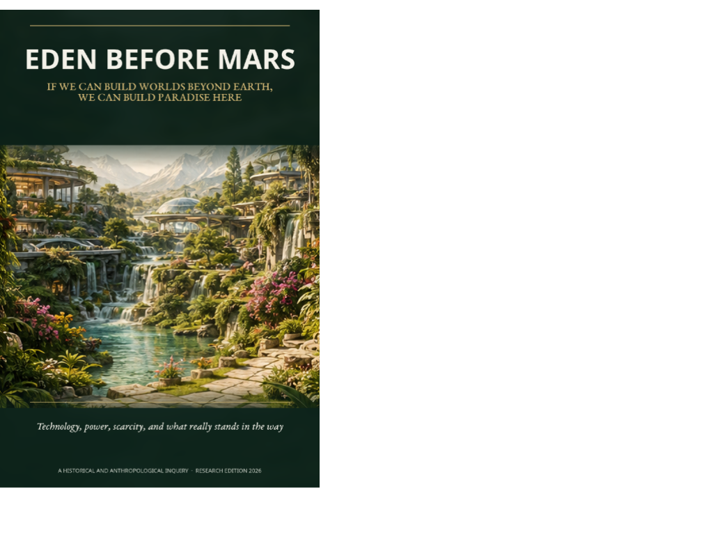

Outfinitist Philosophy · Axiologic Research Editions
Eden Before Mars
If We Can Build Worlds Beyond Earth, We Can Build Paradise Here
If we acquire the power to make other worlds habitable, why is a safer, more beautiful Earth still so difficult?
The planetary mirror test
To settle beyond Earth, humanity would need resilient energy, water recycling, autonomous construction, local resource use, repairable machines and managed ecologies. This book turns that prospect back on the present. If we can learn to manufacture habitability under hostile conditions, why do so many people lack the security, beauty and local agency that are possible on the planet already sustaining us?
The answer is not a single villain. The book follows the garden through myth, grain, ledgers, ships, factories, grids, computers and AI to show how technical capacity repeatedly changes the radius of command. It can enlarge wellbeing; it can also make extraction more distant and the beneficiaries harder to name.
Three questions before liftoff
Was the first fall technology? No. Technologies store, multiply and coordinate power, but their moral shape depends on property, institutions, incentives and the ability to contest decisions.
Can we create a common mind without creating a single brain? The book examines infrastructure and AI as coordination tools that must remain plural, inspectable and locally answerable.
What is the constructive utopia? Not infinite matter or frictionless life: enough shared security and productive capacity that dignity no longer depends on someone else being kept outside the garden.
The first test of planetary maturity is whether we can build a livable world here without consuming the living planet that already exists.
Technology after innocence
For readers tired of both technological fatalism and escapist optimism, Eden Before Mars offers a more demanding hope. It asks what physical systems, political forms and moral habits could make advanced capacity serve repair rather than a more efficient hierarchy.